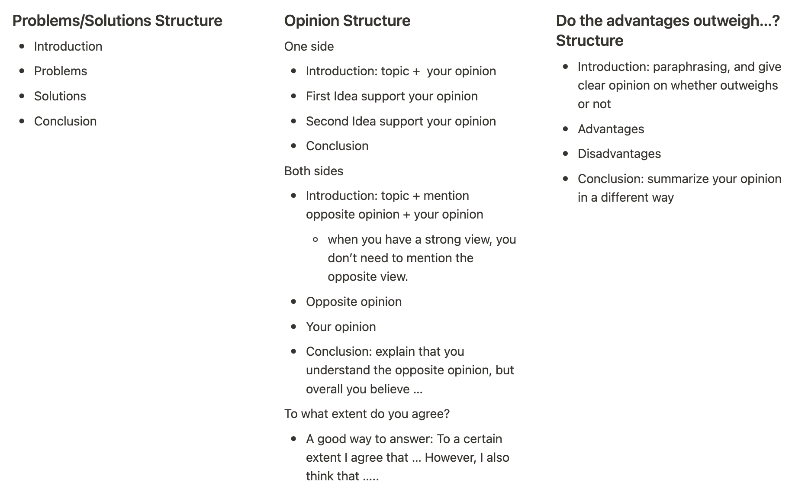

2023 年一大事情是办下来了加拿大的永久居民身份（well 还不算完全搞定，不过进度条也到了 90% 了）。准备写两篇文章记录一下关于加拿大移民的准备和申请流程。今天这一篇先说说移民必须的一个步骤就是英语考试准备的问题～
加拿大移民英语考试可以选择雅思 G 类或者是思培。因为离我们最近的思培考场在纽约，我们选择了可以在波士顿本地考的雅思 G 类。有很多人说思培比雅思 G 类要简单一些，但因为我没有考过思培对这个不是非常清楚。
这里先要说一下移民需要考的雅思和申请学校要考的不是一种～移民考的叫做 General，比起申请学校要考的 Academic 类要简单一些。听力阅读和小作文都要更生活化，不过大作文和口语是一样的。
我们是5月6号考试的，然后10号晚上出的分（这里吐槽一下为什么晚上出分啊，本来打算睡觉的，魂都要吓没了啊！）。还好成绩是满意的，听力阅读9分，写作8分，口语8.5，比我自己想象的好～而且达到了CLB10不用再考了！这里稍微分享一点关于机考雅思的一丢丢小经验，希望可能会有一点帮助～
机考好处
网上有好多关于机考和纸考的对比～对我个人而言，机考最大的好处就是不用写字（这不是废话嘛），写字很慢啊，而且写多了手疼！另外机考作文有 word count，很方便～不过机考在听力上给的检查时间会短一些，但说实话听力感觉当时不会后面再检查也没啥用lol
机考大致流程
感觉可能这是这篇分享里最有用的部分😂感觉提前知道一些考场情况还是蛮有助于减少紧张的～
我们在波士顿的考场，不知道其他地方大概是啥样子～我们报的早上9点的考试，要求8点就要到考场 check-in～除了护照，铅笔和一瓶水以外别的东西都需要暂时寄存～本来我打算穿厚外套进去的因为怕冷，结果接待员说如果你穿进去的话就不能脱了哦，遂弃之……还好房间没有很冷，但是队友头顶有个空调一直对着他吹，搞得他很冷，所以怕冷的乡友还是稍微保暖一点吧～
考试的房间不大，一共十三台电脑，分布在房间两侧，每台电脑之间用隔板隔开～每一个part都会由监考员发一张纸，上面有登录信息，登录后即可开始～这里有个注意事项：建议听力部分登录之后不要马上开始！最好等大家都 settle down 了，没有啥嘈杂的噪音或者人说话了再开始！我就一猴急就开始了，结果监考员还在跟别人说话😵当时真的焦虑得不行。。。
阅读和写作之间是可以去洗手间的，但是每一部分的最后十分钟不行～做题的时候可以稍微注意一下时间，有时间的话出去稍微伸展一下身体也不错～～
机考app
机考最担心的就是对系统不了解导致手忙脚乱～所以如果练的时候就可以用类似的系统去练会觉得心里有底一些，而且可以熟悉highlight和notes的功能（虽然个人觉得notes没啥用）～我自己用的是雅思哥的app，上面有所有剑雅的题，还挺好用的～不过这个app和官方的并不完全相同，比如它可以中间中断考试啥的，所以可以考试前看一下IELTS 官方 YouTube 频道 关于机考软件的介绍～
分项小经验
听力
个人觉得听力没有特别难，感觉比当年考托福简单，毕竟能先读题。不过比较难的是集中注意力！以及抗干扰能力！反正我的attention span现在真的是没有特别长……可以平常练习的时候就稍微注意训练一下自己的这个方面～机考的时候坐在我后面一排的一个人耳机里的声音特别大，有些干扰，虽然在自己耳机里放录音的时候不太听得见，但还是很容易影响心情～感觉平常练习的时候就可以试一试在一个略微嘈杂的环境，用非降噪耳机，让自己习惯这样的环境～
机考里有些题目需要拖拽，而且距离很远，选项在右边，题目在左边，和我用雅思哥app做题的排版有一些差距，在那些选项巨长的情况下可能会有些慌张。我考试的时候遇到了这么一个题，果断采取了用纸笔记笔记的方法，最后再来拖拽答案，避免因为操作错过一些内容～感觉练习的时候也可以记笔记和不记笔记都试一试，看自己最适合什么，考场上可以根据情况选择方法～
听力题里我最怕的是地图题，因为我本来认方位能力就没有很好，说到南北啥的有时候要反应半天……这个就只有多练了～另外关于加不加s的问题，我个人觉得最好是跟着原文走，只是可能这点对听力的要求稍微有那么一点点高……
最后关于英音的问题，有些英音或者英式的词汇的确可能不太熟悉，多练习还是有用的～另外可以把常听的播客换成BBC之类的也不错～（btw发现了好多BBC的好播客～
阅读
阅读总体感觉不是很难，基本上不会看不懂，就是题有的时候有点坑。比如那种概括每段内容的题，我就觉得经常最后的答案我感觉只概括了其中的一小部分！不过摆正心态，只是应试而已～个人觉得阅读的关键是找到文中对应题目的那句话，很多时候题目只是一个paraphrase～填空题也都明确说了是原文里的词，注意别抄错了😂注意拼写和单复数～
T/F/NG题有时候也有点坑，比如我就记得剑雅里有个题，问这个学生是参加完一个summer school之后听障, 是T，F 还是 NG。原文里说的大概是“XX 学生，听障人士，通过这个奖学金项目参加了 YY summer school”，那我就觉得如果问题里具体写了YY summer school那肯定是F，但是题目里没说是哪个summer school啊？那说不定是另外一个summer school之后听障了呢？那不应该是NG吗？这就属于想太多。。。说实话我也不知道怎么应对这个，可能就是稍微多做点题，感受出题风格？
写作
唉我这写作分是拖后腿的，就说说我看过的关于写作的书里提到的一些吧～
时间分配 小作文+大作文一共一个小时～因为大作文分占比更高，建议是二十分钟给小作文，四十分钟给大作文～小作文不用写太长，说是写150+，感觉200-220字差不多了～大作文说是250+，感觉300-330字是一个比较 reasonable 的goal～写太多了也容易犯错🤣
小作文 写信～看到题首先判断是什么类型的信件，formal 的还是 informal 的～这个还是比较好判断的，如果是你的朋友那就是 informal 的，其他大多数都是 formal 的，不过可能还是具体情况具体分析～如果是 formal 的，那就要注意措辞要正式，语气要专业，另外不能写 contraction（I’m 要写成 I am），然后落款的时候要写全名（First + Last name）～如果是 informal的，可以语气亲切一些，显得你跟那个人很熟的样子，落款 First name 即可～
小作文另外一个考点是看你能不能给一个给定情况添加细节～比如我遇到的题是“给你的city council 写个信，反映一下你家门口路的一个问题”——吐槽一下这个题真的有点烦啊，什么叫做路的一个问题。。。真的是很random啊！但是也得忍住这个槽，想想能怎么胡扯～我最后 come up 的是门口修路噪音好吵，然后还把施工垃圾都堆在人行道上没法走路～有了具体细节也就方便你继续编这问题咋个烦人啦，咋解决啦之类的～前期准备的时候可以多看一些题目，也不一定都得写但可以练练编细节～～
大作文 大作文我个人认为首先要注意审题，它是 problem/solution啊，opinion 啊，还是advantage outweigh不啊～之后根据这个题目类型来安排文章结构。另外注意题目有没有问你的意见，如果问了的话请在第一段就请大方清楚地写出来你的意见！一般四段差不多就够了～不同类型文章的结构见下图总结： 
个人觉得大作文比较关键的地方在于 generate idea～特别遇到一些不是很喜欢的，平常接触不是很多的话题，比如对我而言，犯罪相关的就非常头疼。复习的时候看到了这么两个生成 idea 的方式，感觉还挺好使的～
方法一
- Personal perspective: e.g., Stress level can be reduced during traveling; Travel opens our minds and broaden our horizons.
- Economic perspective: e.g. Tourism industry provides employment and attracts investment.
- Environmental perspective: e.g. Tourism encourages air travel which can lead to global warming; Excessive building destroys natural habitats and spoils the landscape.
- Culture perspective: e.g. Through tourism, minority cultures can showcase themselves to a broader audience; Tourism encourage communications between different cultures. Tourism might lead to loss of local traditions.
- Political perspective: e.g. Tourism encourages globalization, which can strengthen political relationships.
方法二（出自慎小嶷）
- Skills
- Technology
- Rights
- Environment
- Employment
- Culture
- Efficiency
- Safety
- Responsibility
- Health
- Money
- Fun
写作练习 我觉得写作还是得靠练的～看了再多咋band 9，用什么连接词提高cohesive，或者好词好句都不如练上几篇（虽然我考试前好像也就只写了10篇lol）。我刚开始的时候感觉自己写得好烂，的确是太久没有写这样的作文了！自己写完之后可以用 ChatGPT来帮你改～真的，ChatGPT写太好了，我反正写不成它这样，学到好多（虽然好像也没记住多少）～在练习的过程中积攒一些自己比较喜欢句式和表达，写下一篇的时候就用上新学的表达增强记忆～
除了写完整的篇目，我觉得练习 idea generation 也不错～给一个题想一些可以表达的点，并写出中心句，有助于多过一些话题～
口语
口语可能是我自己最担心的部分，因为之前只考过托福那种对着电脑的，没考过雅思这种面对面对话的，而且也早有耳闻雅思有一些奇奇怪怪的题……准备的时候我主要是看了雅思哥的题库，但好巧不巧我正好碰上换题季（据说每年5月和9月会换题库？），反正最后我是没被考到题库里的题，但我也不知道北美考场和大陆考场是不是不太一样啥的。但是个人觉得不管怎样还是尽力把题库过一遍，确定一些可以说的事件或者人物之类的，以免考的时候完全没有想法～
第一部分不用说特别多，网上建议是说三四句话就差不多了，大概的流程是先回答问题，然后再稍微发散一下这个回答。不过我感觉我好像话很多，还说了蛮多句的……第一部分可能会问好几个话题，我被问的就有来自在哪？学生还是工作？你的朋友，都干些啥，现在是跟朋友约的多了还是少了？你记得你小学的老师吗？你最喜欢的老师是谁？感觉也是很发散了……
第二部分是我最慌的，考官会给一个话题，然后给你一张纸，在1分钟内要构思好说些啥，然后要说到大约2分钟～有些话题真的很烦啊，什么描述一个你遇到的有趣的老年人。。。这让我用中文说我都不一定能说到两分钟啊。除了提前准备一些语料以外，我觉得还是要多练习这个流程：手机计时一分钟写notes，然后说两分钟，最好可以录音回顾（ps 雅思哥的app是可以录音的～）另外如果可以的话可以多创造一些英文语境～比如我和队友在考试前一两周就尽量说英文，只看英文的剧啊视频啥的～我当年考托福前一天也是，看了一天 Friends，让脑子里充满英文🤣 我在考试的时候遇到的问题是描述自己家附近新开的一家商店，然而我家附近根本就没有商店。。。要求要谈到这是啥店，啥人喜欢来，你觉得会不会成功之类的😂最后我挑了个前段时间发现的文具店，然后一通胡扯，融合了好多个去过的文具店🤣……答完感觉语速有点过快了，而且好像重复也比较严重，可能还是练得太少……
第三部分是关于第二部分的自然延伸，我的就延伸到了购物和消费主义，具体的问题大概有：大家为啥喜欢购物？给年轻人和老年人做广告有啥区别？消费主义有何利弊？你看到中国和美国在消费主义上有什么区别？（感觉这是考官临时想的😂）很幸运的是我平常就比较关注这个话题～感觉准备的话能做的不太多，大概就是多看一些题目，了解一些比较常见的话题，然后针对性的多了解一些～
另外口语也不需要回答得像作文那么严谨，什么中间穿插 side note啦，或者突然想起来一个还可以说的点补上啦都是可以的～可以把考官就当作自己的同学同事，平常大家咋说话的就可以～自然一点，千万别背～
（可能有一些些凡尔赛😳和让人失望的）总结
说实话，我觉得语言这个东西就是得下苦功夫的……虽然考试前还是准备了挺多，我最后觉得自己主要还是靠吃老本😂（当年托福115+，好像现在这雅思作文还不如托福那会儿了）。而且我一直是无语法选手，考试前还是稍微看了一下自己容易弄错的时态啥的，但其实真正口语的时候脑子里啥都没想就是直接说😂 感觉应该有很多错误吧～感觉如果只是短时的准备，可能可以达到的目标主要是适应雅思的考试形态，把自己的水平充分发挥出来～不过准备期间居然又体会到了一点学习语言的乐趣，学会一个新的单词或表达之类的真的还蛮开心的～这回考完我也打算找些方法继续提高自己的英语（如果大家有推荐的话请留言！），争取写作水平向 ChatGPT 靠近🤣
资料推荐
- 咪姐的博文！看了不知道有多少遍😘：加拿大EE 雅思G类 北美备考经验 - Mavis Meow’s Blog
- IELTS Speaking for Success播客：Mary和Rory太好玩啦～他们免费的播客是口语part 1的，都是最新的雅思话题～另外也可以用这个练习听写～
- Thinking Allowed: BBC 的播客～每一期会请一个嘉宾分享自己的新书，一般都是社会问题相关，感觉是积攒写作和口语资料的好地方～虽然有些讲得可能有点太深了hhh但是真的很有趣！以后也会继续听下去～～～
- IELTS Energy English 7+ 播客：关于雅思考试的tips和Q&A，比如口语可不可以跑题啊之类的～还挺实用的～
- IELTS speaking interview 视频：youtube上有好些多ELTS口语实况视频（比如 这个，我也不知道他们打分准不准，但我觉得对于了解流程和每个分得说成啥样还是很有帮助的～
- 慎小嶷的《十天突破雅思口语／写作》：个人建议最开始就可以看这两本～有助于对口语和作文有一个整体的把握并且消除一些焦虑～我是最后一周才在微信读书上发现这书的，时间来不及了只能囫囵吞枣lol 另外他根据话题进行的表达总结个人觉得很不错～
- IELTS Simon：咪姐推荐的这个博客现在需要收费了，不过我看了网上找到的他关于 task 2 介绍的一个pdf 集锦和一个他的 Ideas for IELTS topics的书，感觉还挺有帮助的～
好啦，这一篇就到这里了～下一篇来具体讲一讲加拿大 EE 和申请准备～